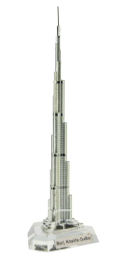

Output from Google Lens: JBL Tune 500 BT HeadPhone
Outputfrom MobileNet: loudspeaker, speaker, speaker unit, loudspeaker system, speaker system
Result: Google Lens is More Accurate.
Output from Google Lens: Apple Magic Mouse
Output from MobileNet: Mouse, computer mouse
Result: Google Lens is more accurate.
Output from Google Lens: Bluetooth Smart Watch
Output from MobileNet: Seatbelt
Result: Google Lens is more accurate.
Output from Google Lens: Unicorn Stuffed toy
Output from MobileNet: teddy,teddy bear
Result: Google Lens is more accurate.
Output from Google Lens: Mi Redmi 5 Smart Phone
Output from MobileNet: cellular telephone, cellular phone, cellphone, cell, mobile phone
Result: Google Lens is more accurate.
Output from Google Lens: Pyraminx
Output from MobileNet: jigsaw puzzle
Result: Google Lens is more accurate.

Output from Google Lens: Souvenir building of burj khalifa
Output from MobileNet: Syringe
Result: Google Lens is more accurate.
Output from Google Lens: Miniature Pink Dice
Output from MobileNet: Spot,spotlight
Result: Google Lens is more accurate.
>
Output from Google Lens: Copper Water Bottle
Output from MobileNet: microphone,mike
Result: Google Lens is more accurate.
Output from Google Lens: Surgical mask blue
Output from MobileNet: Sleeping Bag
Result: Google Lens is more accurate.
I have tested 10 images Google Lens have predicted 10 of them correctly. And MobileNet have predicted 0 of them correctly.
So according to my case study Google Lens is more Accurate

.png)